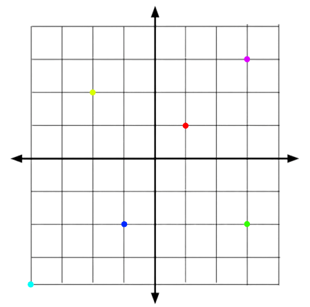
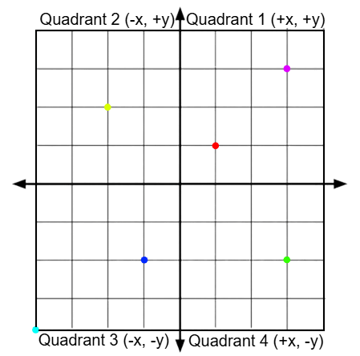

Cartesian and Polar Coordinates
Introduction
Cartesian and Polar coordinates are both two systems used to illustrate a point in a space. Cartesian coordinates is the more common type of coordinate system, used to specify points in a 2D or 3D space...

Cartesian graphs are seperated into four sections called quadrants, each quadrant is a space with positive or negative y values...

From this graph, we can see that each quadrant takes up a quarter of the whole graph, like how quadrant 1 contains all points with a positive x and positive y value.